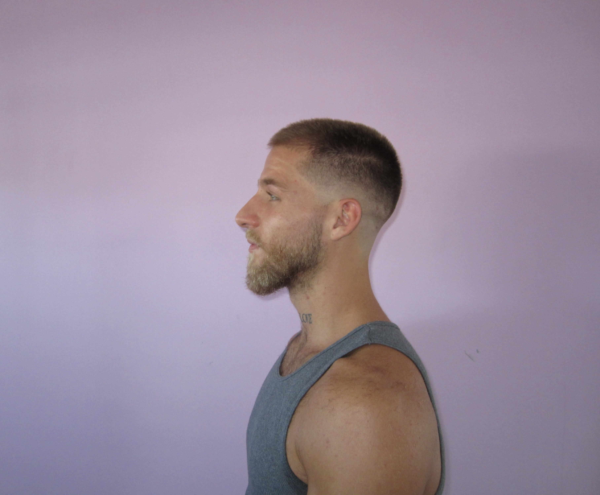

To love a person is to learn the song that is in their heart and to sing it to them when
they have forgotten.
-Arne Garborg

I’m Michael — a computer science major in my last semester at Farmingdale State College, building a future where logic and creativity don’t just coexist, they amplify one another. Coding was supposed to be the “practical” path, but somewhere between late-night debugging sessions and sketching ideas in my notebook, I realized that the way I see the world has always been artistic. Whether I’m designing an app interface, editing visuals, or conceptualizing a garment, creativity is the language that shapes how I build technology. Throughout college, I bartended to keep myself afloat, and the service industry ended up shaping me more than I expected. Behind the bar, you learn quickly: how to read people, how to stay calm when everything is loud and chaotic, how to communicate, and how to balance ten different responsibilities without dropping your sense of self. It matured me, sharpened my social instincts, and taught me how to handle pressure with a kind of grounded confidence I didn’t have when I started. Now, with graduation on the horizon, I’m stepping into the version of myself I’ve been building--and learning about--quietly for years. This next chapter is about blending the two halves of who I am: the computer scientist and the artist. I have picked up many skills on this long journey--the highs, the lows... the late nights studying and the late nights dancing, everything in between was steps leading me back to myself, realizations that creativity is not bound to paints and fabrics, and technology is equally a potent means of creation. — With Love, Michael
Took AP Computer Science and absolutely hated it. Hands down one of my least favorite experiences. Thought coding and I were done for good.
Stepped away from traditional school, never before had I been unable to recognize myself. This time introduced me to my passion for creativity and self-expression—fashion, art, design, collaboration. These weren't wasted years; they were some of the best moments of my life, and they shaped everything that came after.
Took Programming 1 as an elective, just filling a requirement. Something clicked. Chose to pursue a computer science degree, this time with a completely different lens—one that saw code as a creative tool, not just logic puzzles.
Graduating at 24. Not late—right on time. The detours, the creative exploration, the bartending shifts, the fashion week moments—they all led here. Building a future where my tech skills and creative vision amplify each other, because that's always been the point.